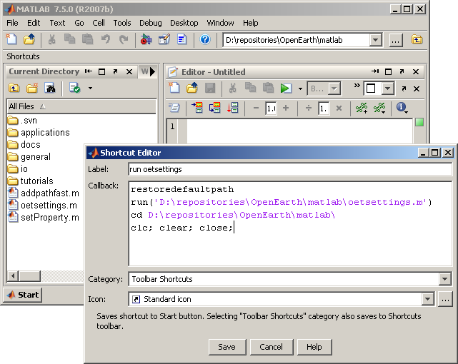

Initializing oetsettings
if you use MATLAB and OpenEarth, you shoudl always start off with running oetsettings. Oetsettings is essential to unleash the power of OpenEarth to MATLAB. It adds all relevant toolbox paths to the matlab search path.
Figure out what folder oetsettings.m is located in, and the run it:
run D:\repositories\OpenEarth\matlab\oetsettings
Adding <a href="http://OpenEarth.deltares.nl">OpenEarthTools</a>, please wait ...
OETSETTINGS enable the OpenEarthTools matlab tools by adding all relevant matlab paths.
OpenEarthTools is a collection of open source tools
intended to be licensed under the (<a href="http://www.gnu.org/licenses/licenses.html">GNU (Lesser) Public License</a>).
In order to suppress this information, run the function with input argument quiet:
"oetsettings('quiet');" or "oetsettings quiet"
For more information on OpenEarthTools refer to the following sources:
* wiki: <a href="http://OpenEarth.deltares.nl" >OpenEarth.Deltares.nl</a>
* repository: <a href="https://repos.deltares.nl/repos/OpenEarthTools/trunk/matlab">https://repos.deltares.nl/repos/OpenEarthTools/trunk/matlab</a>
* help blocks: Scroll through the OpenEarthTools directories by clicking
...As you don't want to remember this code, but you will run it every time you start MATLAB from know on, you should make a ahortcut for it on the shortcut bar. Just rightclick ==> new shortcut. Enter the command to run oetsettings. If you save this, you can run oetsetings by pressing that shortcut button. You might even want to add some other commands, so matlab is effectiveley reset every time you press this button.
restoredefaultpath
run('D:\repositories\OpenEarth\matlab\oetsettings.m')
cd D:\repositories\OpenEarth\matlab\
clc; clear; close;
